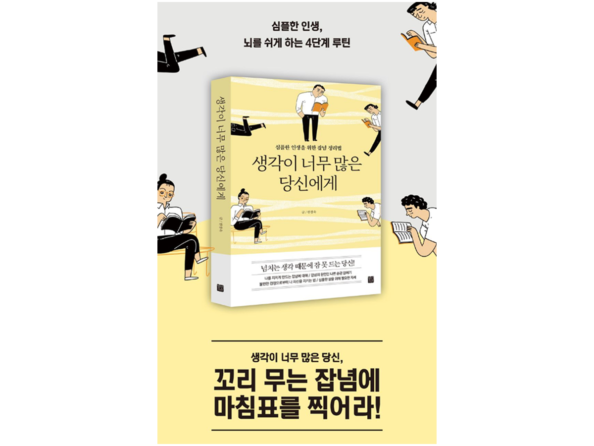

도서 소개
행복한 인생을 살기 위해서는 ‘심플한 사고’가 필요하다. 심플한 사고는 삶을 더욱 명확하게 비춰주고, 지금 이 순간에 온전히 몰입할 수 있도록 돕는다. 《생각이 너무 많은 당신에게》는 근심 걱정과 잡념을 제거해서, 마치 시끄러운 일상의 소음에서 벗어나 고요한 자연의 소리를 듣는 것처럼, 단순하고 평온한 기쁨을 선물한다.

꼬리 무는 잡념에 마침표를 찍어라!
주요 목차
- CHAPTER 1 잡념이 나를 지치게 한다
- 왜 이렇게 잠이 안 올까?
- 인생에 도움 안 되는 생각 vs. 도움 되는 생각
- 걱정을 실제로 본 적이 있나요?
- CHAPTER 2 잡념을 부르는 나쁜 습관 죽이기
- 내 인생 갉아먹는 걱정과 불안
- 무심코 한 행동이 후회를 부른다
- 자책하지 마라, 자존감 떨어진다
- CHAPTER 3 불편한 감정으로부터 나를 지키는 법
- 감정을 이해하면 불안도 해소된다
- 견디는 것이 아니라 무너져가고 있는 중이다
- 화를 내면 네가 아프고, 화를 참으면 내가 아프다
책 속으로
우리는 수많은 걱정으로 인해 몸과 마음의 고통을 겪는다. 그러나 힘든 상황일수록 걱정의 실체를 확인하려는 노력을 기울여야 한다.
4%의 걱정은 더 나은 삶을 위해서 반드시 해결해야 하지만 96%의 걱정은 불필요하다. 마치 실제 존재한다기보다는 신화 속에 존재하는 동물과 유사하다. 결코 현실화될 수 없는, 인간의 뇌가 불러온 왜곡된 환상이라 할 수 있다. _34쪽
불확실성은 수많은 잡념을 불러와서 소중한 시간들을 앗아 간다. 피할 수 없음을 인정하고 수용하는 태도를 지닌다면, 불확실성은 내적 성장과 자아 발견의 기회로 활용할 수 있어서, 개인의 성장과 학습을 자극하는 촉매제가 될 수 있다.인간은 신이 아니다. 모든 것을 통제하고 싶지만 그건 애초부터 불가능한 일이다. 불확실하니까 인생이고, 불완전하니까 인간이 아니겠는가. _60쪽
함께 읽으면 좋은 책
이 책과 비슷한 위로를 주는 도서들
- 죽고 싶지만 떡볶이는 먹고 싶어
- 미움받을 용기
- 기분을 관리하면 인생이 관리된다